News
Welcome to the QUBE Lab at SKKU, S. Korea!
We are experimental and theoretical biophysicists working on understanding the influence of quantum spin effects on biological function and their medical applications.
Our strong background in spin chemistry allows us to tackle key questions in quantum biophysics. We are particularly interested in the radical pair mechanism and its role in biological systems.
We approach these scientific questions by developing experimental techniques and software, and expertise to provide a comprehensive understanding of the quantum effects in biological systems.
We are seeking highly motivated undergraduate students, graduate students, and postdoctoral research fellows. If you would like to know more about our group and research, please send a self-introduction and CV to Prof. Lewis M. Antill at lewis.antill@g.skku.edu
Proud to share our work in @NaturePhotonics https://t.co/xFAFNGu4lt
— Lewis Antill (@QUBE_lab) April 8, 2025
Research
Our group focusses on understanding the influence of quantum effects on biological function and their medical applications.
Event Counts by Country for our RadicalPy Software
Manually entered data
Introduction to Spin Chemistry with RadicalPy
These tutorials cover electrons, spins, magnetic moments, the Zeeman effect, Hyperfine interactions, J-coupling, dipolar coupling, chemical kinetics, molecular motion, spin Hamiltonians, density matrices, time evolution, kinetic and relaxation superoperators, and more. *Click here*.
Our Approach
We approach these scientific questions by combining a range of techniques and expertise to provide a comprehensive understanding of the quantum effects in biological systems.
Technique Development
Providing the right tools for the job.
Software and Theory Development
Providing the correct interpretation of experimental findings.
Collaboration
Working with experts in key areas relevant to the project.
Publications
Recent Publications
-
Single-photon quantum spin effects in biomolecules
Published in Nature Photonics!
The effects of magnetic fields on quantum entangled biomolecules are detected using a highly sensitive magneto-fluorescence fluctuation microspectroscopy technique. This marks an important advance in experimental quantum life sciences at the single-photon level.
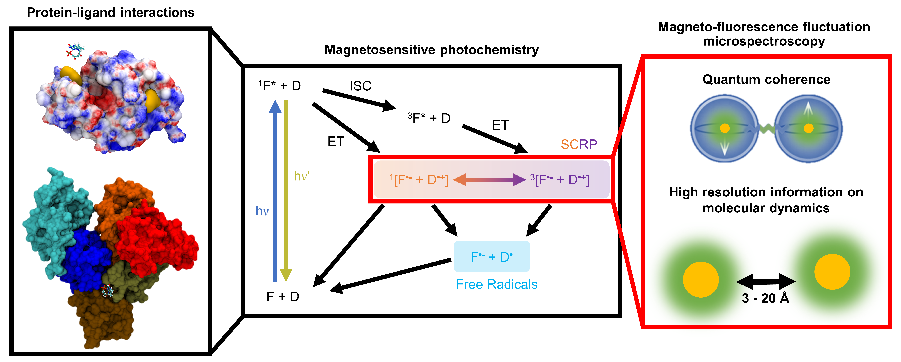
-
Open-source spin dynamics software - RadicalPy
Published in the Journal of Chemical Theory and Computation!
We hope that this versatile framework provides the means for students and researchers to perform correct and complex radical pair dynamics simulations with relative ease, making it ideal as a teaching or learning tool for creating quick simulations on the fly.

-
Engineered magnetosensitive fluorescent proteins
We recently created a new class of magnetosensitive fluorescent proteins (MFPs), which we now show overcome these challenges and represent the first biological quantum-based sensor that functions at physiological conditions and in living cells.
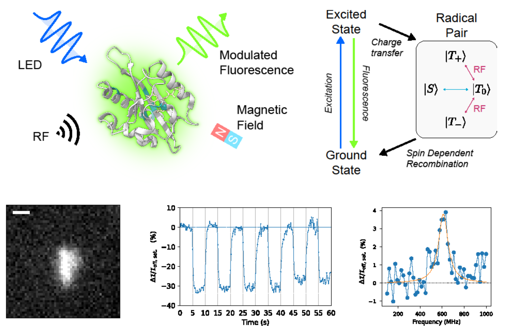
Publication List
# First author, * Corresponding author
[14] R. Bartölke#, K. B. Henbest#, J. Schmidt, T. Kasahara, D. R. Cubbin, J. Gravell, M. Bassetto, G. Dautaj, T. L. Pitcher, P. D. F. Murton, G. Saberamoli, J. Forst, M. Khazani, S. Apte, C. Olavesen, H. Hayward, O. Paré-Labrosse, L. M. Antill, J. Xu, P. J. Hore*, C. R. Timmel*, S. R. Mackenzie*, H. Mouritsen*, Dataset associated with: Magnetic sensitivity of cryptochrome 4a in domesticated quail with migratory origins, 2026
[13] G. Abrahams#*, A. Štuhec, V. Spreng, R. Henry, I. Kempf, J. James, K. Sechkar, S. Stacey, V. Trelles-Fernandez, L. M. Antill, C. R. Timmel, J. J. Miller, M. Ingaramo, A. York, J. P. Tetienne, and H. Steel*, Quantum Spin Resonance in Engineered Proteins for Multimodal Sensing, Nature, 2026 (IF: 50.5; JCR: 1.39%)
Press Releases
University of Oxford NewsEurekAlert!
Phys.org
GEN News
Gene Online
Mirage News
Related Links
Zonodo Data Set[12] K. Hino#*, D. S. Frantzov, Y. Kurashige, L. M. Antill*, Introduction to modelling radical pair quantum spin dynamics with tensor networks, arXiv, 2025
Press Releases
Quantum Zeitgeist[11] J. Gravell#, P. D. F. Murton#, T. L. Pitcher, K. B. Henbest, J. Schmidt, M. M. Buffett, G. Moise, A. S. Gehrckens, D. R. Cubbin, A. Štuhec, L. M. Antill, O. Paré-Labrosse, M. Bassetto, G. Saberamoli, J. Xu, C. Langebrake, M. Liedvogel, E. Schleicher, S. Weber, R. Bartölke*, H. Mouritsen*, P. J. Hore*, S. R. Mackenzie*, C. R. Timmel*, Spectroscopic characterisation of radical pair photochemistry in non-migratory avian cryptochromes: magnetic field effects in GgCry4a, J. Am. Chem. Soc., 147, 28, 24286-24298, 2025 (IF 14.5; JCR 8.6%)
[10] L. M. Antill#*, M. Kohmura, C. Jimbo, and K. Maeda, Introduction of magneto-fluorescence fluctuation microspectroscopy for investigating quantum effects in biology, Nat. Photonics, 19, 178–186, 2025 (IF 32.3; JCR 1.02%)
Press Releases
Nature Photonics News & ViewsOxford Instruments Andor - Application Note
Azo Optics
Related Links
Figshare Data Set[9] G. Abrahams#*, A. Štuhec, V. Spreng, R. Henry, I. Kempf, J. James, K. Sechkar, S. Stacey, V. Trelles-Fernandez, L. M. Antill, C. R. Timmel, J. J. Miller, M. Ingaramo, A. York, J. P. Tetienne, and H. Steel*, Quantum Spin Resonance in Engineered Magneto-Sensitive Fluorescent Proteins Enables Multi-Modal Sensing in Living Cells, bioRxiv, 2024
Related Links
Zonodo Data Set[8] L. M. Antill#* and E. Vatai#*, RadicalPy: a tool for spin dynamics simulations, J. Chem. Theory Comput. 21, 20, 9488–9499, 2024 (IF 5.7; JCR 11.4%)
Related Links
Github RepoDocumentation
[7] M. Hanić#, L. M. Antill#, A. S. Gehrckens#, J. Schmidt, K. Görtemaker, R. Bartölke, T. J. El-Baba, J. Xu, K. W. Koch, H. Mouritsen, J. L. P. Benesch, P. J. Hore, and I. A. Solov’yov*, Dimerization of European robin cryptochrome 4a, J. Phys. Chem. B 127, 28, 6251–6264, 2023 (IF 2.8)
[6] M. Hanić#, L. M. Antill#, A. S. Gehrckens#, J. Schmidt, K. Görtemaker, R. Bartölke, T. J. El-Baba, J. Xu, K. W. Koch, H. Mouritsen, J. L. P. Benesch, P. J. Hore, and I. A. Solov’yov*, Dimerisation of European robin cryptochrome 4a, bioRxiv, 2023
[5] L. M. Antill#, S. Takizawa, S. Murata, and J. R. Woodward*, Photoinduced flavin-tryptophan electron transfer across vesicle membranes generates magnetic field sensitive radical pairs, Mol. Phys. 117, 2594–2603, 2018 (IF 1.6)
[4] L. M. Antill# and J. R. Woodward*, Flavin Adenine Dinucleotide Photochemistry Is Magnetic Field Sensitive at Physiological pH, J. Phys. Chem. Lett. 9, 2691– 2696, 2018 (IF 4.9)
[3] L. M. Antill#, J. P. Beardmore#, and J. R. Woodward*, Time-resolved optical absorption microspectroscopy of magnetic field sensitive flavin photochemistry, Rev. Sci. Instrum. 89, 023707, 2018 (IF 1.3)
[2] J. P. Beardmore#, L. M. Antill#, and J. R. Woodward*, Optical Absorption and Magnetic Field Effect Based Imaging of Transient Radicals, Angew. Chem. Int. Ed. 54, 8494–8497, 2015 (IF 16.1; JCR 6.9%)
Press Releases
The University of TokyoThe University of Tokyo (日本語)
Science Daily
Nanowerk
Phys.org
EurekAlert!
[1] L. M. Antill#, M. M. Neidhardt, J. Kirres, S. Beardsworth, M. Mansueto, A. Baro, and S. Laschat*, Ionic liquid crystals derived from guanidinium salts: induction of columnar mesophases by bending of the cationic core, Liq. Cryst. 41, 976–985, 2014 (IF 2.4)
PI: Lewis M. Antill
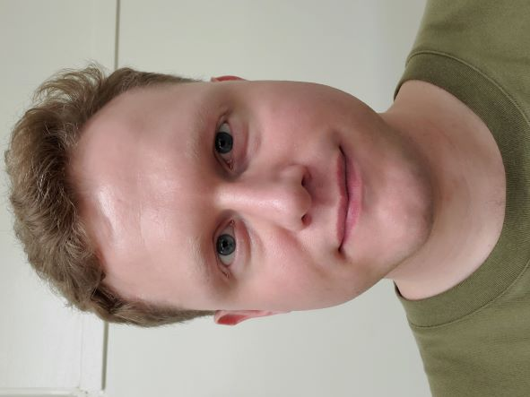
Lewis is a son and a grandson of a mechanical engineer and a master carpenter, respectively, which led to him tinkering in the family workshops from the age of four. The skills developed through the course of his childhood have proven invaluable during his academic career as a spin chemist who specialises in developing experimental techniques for understanding quantum spin effects in biological systems. He is a pioneer of magnetic field effect-based microspectroscopy, in which seminal papers were published during his PhD. His PhD thesis at The University of Tokyo (2014-2018) focused on developing transient optical absorption-based microspectroscopy for investigating flavin-based spin-correlated radical pairs (see Angew. Chem. Int. Ed. and Rev. Sci. Instrum.). The development of this high-sensitivity instrumentation led to the discovery of magnetosensitive photochemistry of flavin adenine dinucleotide (FAD) at physiological pH (see J. Phys. Chem. Lett.) and the first reported low field effect (LFE) on FAD photochemistry, the mechanism by which migratory birds are proposed to sense the geomagnetic field to navigate across the world (see Angew. Chem. Int. Ed.). His efforts were awarded with a Best Poster Prize at the 2017 Spin Chemistry Meeting, The First National High School Memorial Award (一高記念賞) and graduated as valedictorian (卒業生代表).
During his JSPS Postdoctoral Fellowship (2018-2019, nominated by The Royal Society) at Saitama University and his independent JST PRESTO (さきがけ) Research Fellowship (2019-2023), he developed the most sensitive magnetic field effect-based technique to date, named magneto-fluorescence fluctuation microspectroscopy (MFFMS), a fluorescence-based microspectroscope that enables quantum spin effects on biomolecules to be observed at single-photon levels. This work was awarded a Best Presentation Award and Best Poster Prizes (by students) at domestic and international conferences (here and here) and was recently published in a Nature Photonics and featured in Nature Photonics News & Views.
During this time, he started to co-develop the open-source object-oriented spin dynamics software RadicalPy, which was recently published in the Journal of Chemical Theory and Computation. This software is designed to provide a versatile framework for students and researchers to perform correct and complex radical pair spin dynamics simulations with relative ease.
He then moved to the University of Oxford in early 2023 as a Research Associate to investigate quantum phenomena in cryptochrome proteins for avian magnetoreception and singlet fission materials. He was shortlisted for a Junior Research Fellowship (JRF) at New College, University of Oxford before deciding to move to S. Korea, where since December 2024, he has been running his own group that focuses on understanding the influence of quantum effects on biological function and their medical applications in the Institute of Quantum Biophysics (IQB) at Sungkyunkwan University (SKKU).
He is currently organising and running the Spin Chemistry Graduate Seminar Series (SCGSS), whose aim is to give graduate students the opportunity to present their research, in English, in an online conference format. His contributions to the field of spin chemistry were recognised and awarded with the honour of becoming the youngest member of the prestigious International Spin Chemistry Committee and appointed as a Visiting Academic at the University of Oxford in 2024. He is also a Guest Editor for PLOS Computational Biology and a Member of the Royal Society of Chemistry and Royal Microscopical Society.
Professional Experience
Research Professor (Principal Investigator) Sungkyunkwan University, S. Korea - 2024/12-Present
Visiting Academic University of Oxford, UK - 2024/12-Present
Research Associate in Laser Photochemistry and Spectroscopy
University of Oxford, UK - 2023/04-2024/11
Advisors: Prof. Peter J. Hore, Prof. Christiane R. Timmel, Prof. Stuart R. Mackenzie
Independent PRESTO Researcher / Special Project Researcher Japan Science and Technology Agency / Saitama University, Japan - 2019/10-2023/03
JSPS Postdoctoral Fellowship for Research in Japan
Saitama University, Japan - 2018/10-2019/09
Advisor: Prof. Kiminori Maeda
Nominated by The Royal Society
Education
Ph. D. in Environmental Sciences
The University of Tokyo, Japan - 2014-2018
Thesis: Spatially resolved microspectroscopy of flavin-based magnetosensitive (フラビンに基づく磁気感受性光化学の空間分解顕微分光）
Graduated as Valedictorian (卒業生代表)
The First National High School Memorial Award (一高記念賞)
Supervisor: Prof. Jonathan R. Woodward
M. Chem. in Chemistry (with a Year Abroad)
University of Leicester, UK (Year abroad: University of Stuttgart, Germany) - 2010-2014
Royal Society of Chemistry Accredited Degree
Fourth year thesis: The determination of total atmospheric hydroxyl radical reactivity with the development of the comparative reactivity method - First Class
Supervisor: Prof. Paul S. Monks
Third year thesis: Liquid crystalline aryl guanidinium ions: effects of bending on the mesomorphic properties - First Class
Supervisor: Prof. Dr. Sabine Laschat
Awards
SEST Young Investigator Award (SEST 奨励賞) The 64th Annual Meeting of the Society of Electron Spin Science and Technology (第６４回電子スピンサイエンス学会年会) - 2025/11
Quantum Biology - Best Researcher Award AMO Physics - 2025/03
Best Presentation Award The 3rd Annual Meeting of the Quantum Life Science Society Conference (第３回量子生命科学会) - 2021/09
EFEPR Scholarship International EPR (ESR) Society - 2019/11
The First National High School Memorial Award (一高記念賞) Best academic performance and dissertation in the year - 2019/03
Valedictorian (卒業生代表) The University of Tokyo - 2018/09
Best Poster Prize Spin Chemistry Meeting 2017 (Taylor & Francis) - 2017/09
2017 International Conference Travel Grant The University of Tokyo - 2017/05
Member of the Royal Society of Chemistry - 2016
MEXT Scholarship for Ph. D. - 2014/08
ERASMUS Scholarship for M. Chem. - 2012/07
Teaching Experience
Student Supervisor Saitama University, University of Oxford, Sungkyunkwan University - 2019-Present
Guest Lecturer Saitama University, Japan - 2019-2023
JSPS Science Dialogue Lecture Sendai Seiryo Secondary School, Japan - 2019
Teaching Assistant The University of Tokyo, Japan - 2015-2017
Komaba Writers Studio Teaching Assistant The University of Tokyo, Japan - 2015-2016
Sports England Level 2 Coach British Ju-Jitsu Association Governing Body, UK - 2011-2014
Funding
JST ASPIRE for Rising Scientists (Co-PI) 60 million JPY - 2024/10-2027/09
JST PRESTO International Reinforcement Support (PI) 3 million JPY - 2020/10-2021/03
JST PRESTO (Quantum Bio) Creation of Life Science Basis By Using Quantum Technology (PI) 40 million JPY - 2019/10-2023/03
Grant-in-Aid for JSPS Research Fellow (Co-PI) 4 million JPY - 2018/10-2019/09
Professional Affiliations
International Spin Chemistry Committee
Royal Society of Chemistry (MRSC)
Royal Institute of Navigation (MRIN)
Royal Microscopical Society
International EPR (ESR) Society
Society of Electron Spin Science and Technology (SEST)
European Microscopy Society
International Society of Magnetic Resonance
Group Members
Graduate Students (in alphabetical order)
Khanh Van Do (Đỗ Vân Khanh, with Minibrain Lab, SKKU)
PhD Candidate
Quantum spin effects on nanotube models for energy transfer in neurodegenerative diseases
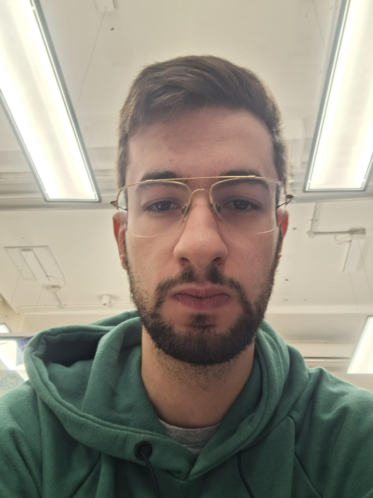
Damyan Frantzov (with Timmel Group, University of Oxford)
DPhil Student
RadicalPy software development
Gaeun Lee (이가은, with MTBS Lab, SKKU)
PhD Student
TBD
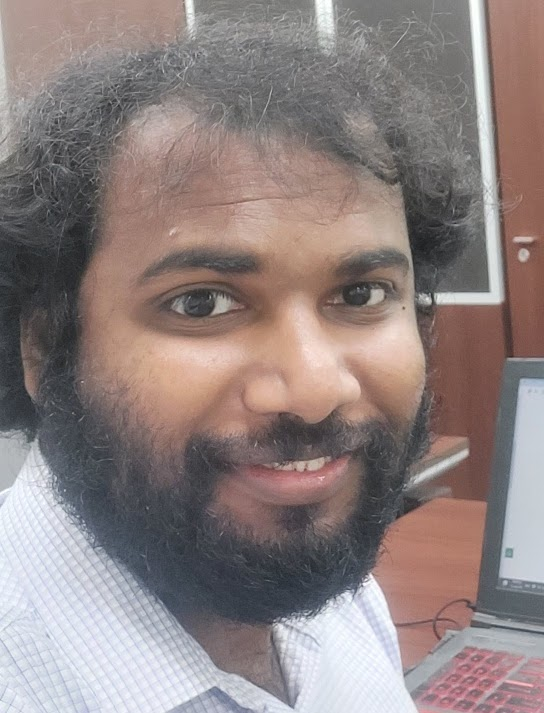
Beniel Jones Rajasekaran (பெனியேல் ஜோன்ஸ் இராஜசேகரன், with LAMP4PPM Lab, SKKU)
PhD Candidate
Development of room-temperature qubits and qubit enhanced spintronics sensors
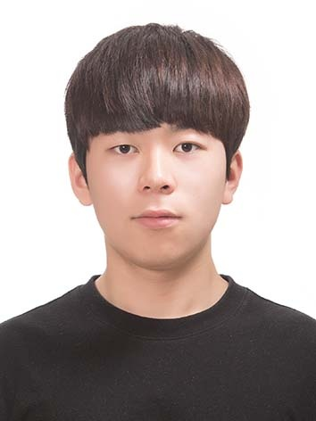
Chihe Ko (고지해, with BNP Lab, SKKU)
MS/PhD Student
TBD
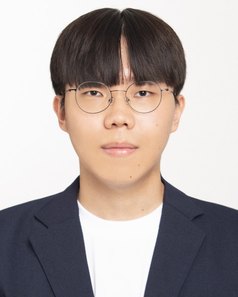
Dongjae Kim (김동재, with BNP Lab, SKKU)
MS/PhD Student
TBD
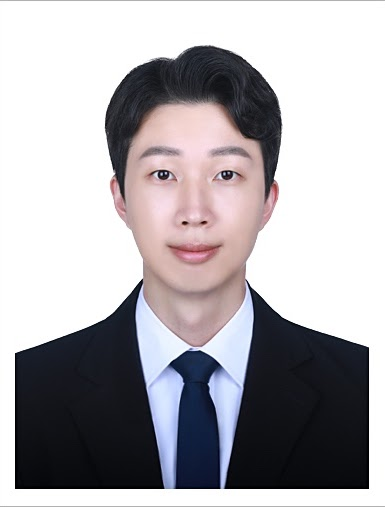
Hyeong Jin Ahn (안형진, with MTBS Lab, SKKU)
MS/PhD Student
TBD
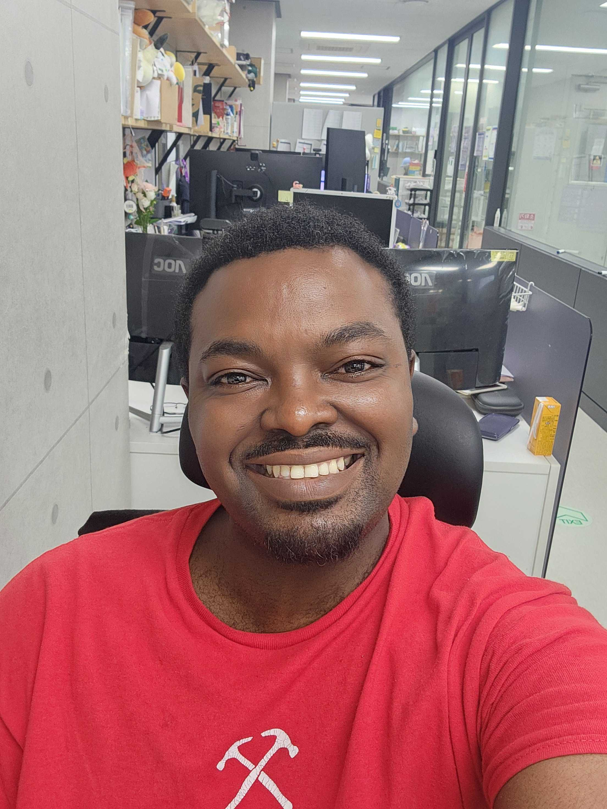
Joseph Baidoo (Papa Kojo Badu)
MS/PhD Student
TBD
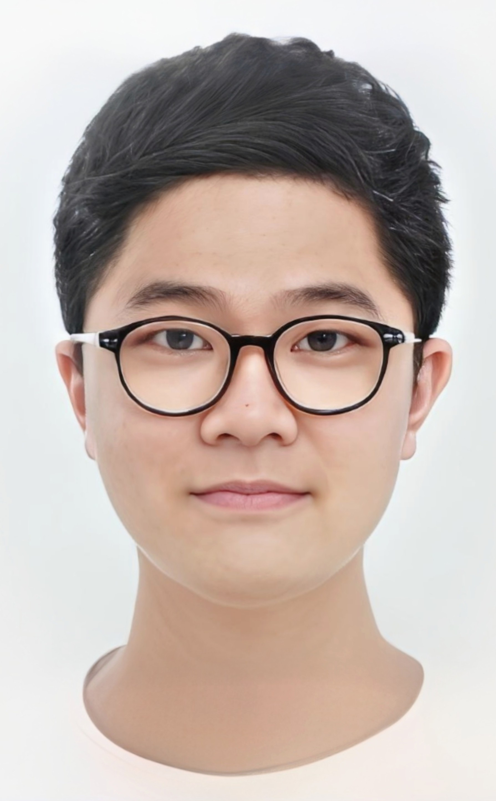
Minjoon An (안민준, with Minibrain Lab, SKKU)
MS/PhD Student
Quantum coherence in microtubules for reconstructing neuronal circuits
Sharon Jeeho Ham (함지호, with MTBS Lab, SKKU)
MS/PhD Student
TBD
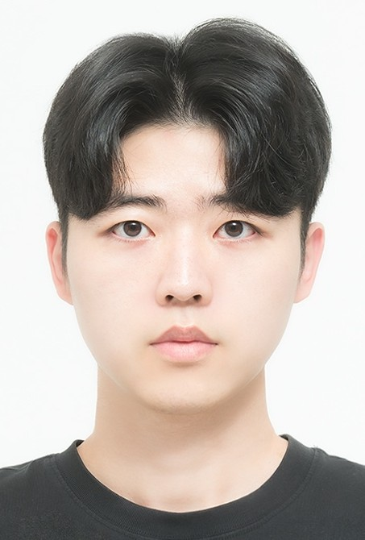
Minwoo Kim (김민우, with Minibrain Lab, SKKU)
MS/PhD Student
Quantum coherence in solitons for ATP restoration in neurodegenerative diseases
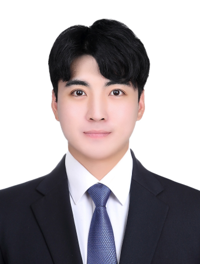
Tae Hoon Kim (김태훈, with MTBS Lab, SKKU)
MS/PhD Student
TBD
Kiyeon Park (박기연, with MTBS Lab, SKKU)
MS/PhD Student
TBD
Alumni
Master's
- Mizuki Kohmura (香村泉希, with Maeda Lab, Saitama University)
- Ayumi Fukai (深井歩実, with Maeda Lab, Saitama University)
- Chiho Jimbo (神保知歩, with Maeda Lab, Saitama University)
- Minori Fujita (藤田みのり, with Maeda Lab, Saitama University)
Undergraduate
- Hiroya Matsuda (松田大弥, with Maeda Lab, Saitama University)
- Wataru Fushimoto (伏本航, with Maeda Lab, Saitama University)
- Ai Hatayama (畑山愛, with Maeda Lab, Saitama University)


QUBE Lab
Tackling key questions in quantum biophysics
Institute of Quantum Biophysics, Department of Biophysics, Sungkyunkwan University
lewis.antill@g.skku.edu
Keywords: Spin Chemistry, Quantum Biophysics, Quantum Biology, Quantum Sensing, Microscopy, Spectroscopy, Photochemistry, Spin Dynamics Simulation, Molecular Dynamics Simulation, Computer Programming, Software Design, Protein Synthesis